FMP 211 :: Lecture 11 :: IMPLEMENTS FOR INTERCULTURAL OPERATIONS – HOES, LONG HANDLED WEEDERS, CULTIVATORS, AND ROTARY TILLERS

The operations performed in the field after sowing but before harvesting the crop are called as intercultural operations. Interculturing is described as breaking the upper surface of soil, uprooting the weeds (unwanted plants), aerating the soil, thereby promoting the activities of microorganism and making good mulch, so that moisture inside the field is properly retained from evaporation.. These operations are accomplished by means of many tools and equipments, such as hoes, cultivators, harrows, rotary hoes etc.
HAND HOE
Hand hoe is the most popular manually operated weeding tool use in the farm. It consists of an iron blade and a wooden handle. The operator holds the handle and cuts the soil with the blade to a shallow depth of 2-3 cm thereby weeds are cut and soil is stirred. The handle is short (30-40cm long) hence the operator uses the tool in bending posture. The coverage is 5-7 cents per day.
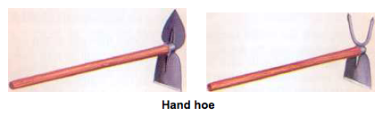
HOE COME RAKE
The hoe cum rake is multipurpose hand tool, which consists of a flat blade on one side like powrah and prongs on the other side. The blade and prongs are either made from single stock with an eye in the centre or joined to an eye by welding. A wooden handle is fitted to the eye for operation. The flat blade is used for digging and rake side for weeding and collection of weeds and trashes. The hoe cum rake is a secondary nursery bed preparation tool and is used for lighter operations. The flat end of the tool is operated with impact action and rake end by

LONG HANDLE WEEDERS
Hand hoes exert greater strain on the operator because of the short handle with necessitates the operator to do weeding job in bent posture. To avoid this nowadays long handles are used in hoes and hence they are called as long handle weeders. The popular long handle weeders available are a) star type weeder b) peg type weeder. These weeders are also called as dry land weeders since they are used in dry lands
a) Star type weeder : It is suitable for weeding in dry lands. It can be used in garden lands also when the soil moisture is low (10-15 %). One limitation is that it works well in line sown crops and not in broadcasted fields. It consists of a blade for cutting the weeds, a fulcrum wheel for push-pull movement and a long handle for easy operation. Long handle reduces strain on the operator. The radial arms of the fulcrum wheel is cut in to star like projections and hence the name star type weeder. Star wheel is designed for loamy soils.The operating width of the blade is 120 mm. The coverage is 0.05 ha/day.
b) Peg type weeder: It is suitable for weeding in dry lands. It can be used in garden lands also when the soil moisture is low ( 10-15 %). One limitation is that it works well in line sown crops and not in broadcasted fields. It consists of a blade for cutting the weeds, a fulcrum wheel for push-pull movement and a long handle for easy operation. Long handle reduces strain on the operator. There are pegs welded on the periphery of the wheel hence the name peg type weeder. Peg type wheel is designed for clayey soils. The operating width of the blade is 120 mm. The coverage is 0.05 ha/day.
Both star type and peg type weeders are also called as dry land weeders.
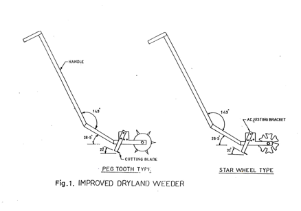
c) Wheel hoe
The wheel hoe is a widely accepted weeding tool for weeding and intercultural in row crops. It is a long handled tool operated by pushes and pull action. The general construction of wheel hoe comprises of a wheel, tool frame, a set of replaceable tools and a handle Different types of soil working tools such as straight blade, V -blade, sweep, shovel, etc. can be used for different works namely weeding , soil mulching, stirring etc. .Long handle reduces drudgery to operator. Wheel reduces energy requirement for pushing. All the soil working components of the tool are made from medium carbon steel. The coverage is 0.05 ha/day.
| 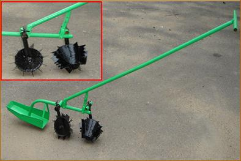 | 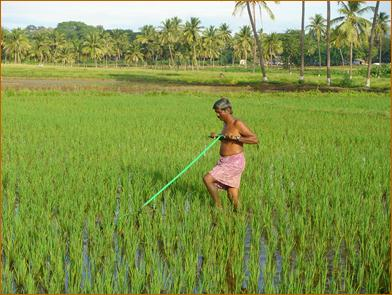 |
| Cono weeder | Cono weeder in operation |
CULTIVATORS
It is an implement for inter cultivation with laterally adjustable tines or discs to work between crop rows. This can be used for seed bed preparation and for sowing with seeding attachment. The times may have provision for vertical adjustments also.
The cultivator can be 1) Disc cultivator, 2) Rotary cultivator, 3) Tine cultivator.
Disc cultivator
It is a cultivator fitted with discs.
Rotary cultivator
It is a cultivator with tines or blades mounted on a power driven horizontal shaft.
Tine cultivator
It is a cultivator fitted with tines having shovels.
The cultivator stirs the soil, and breaks the clods. The tines fitted on the frame of the cultivator comb the soil deeply in the field. A cultivator performs functions intermediate between those of plough and the harrow. Destruction of weeds is the primary function of a cultivator. The following are a few important functions performed by a cultivator.
- Destroy the weeds in the field.
- Aerate the soil for proper growth of crops.
- Conserve moisture by preparing mulch on the surface.
- To sow seeds when it is provided with sowing attachments.
- To prevent surface evaporation and encourage rapid infiltration of rain water into the soil.
Depending upon the type of power available for the implement, the cultivator can be classified as 1) Tractor drawn, 2) Animal drawn.
Tractor Drawn Cultivator
It may be 1) Trailed type 2) Mounted type.
Trailed type cultivator
It consists of a main frame which carries a number of cross members to which tines are fitted. At the forward end of the cultivator, there is a hitch arrangement for hitching purpose. A pair of wheels are provided in the cultivator. The life is operated by both wheels simultaneously so that draft remains even and uniform. The height of the hitch is adjusted so that main frame remains horizontal over a range of depth setting. The tines in each row are spaced widely to allow free passage of the soil and trash around them. The tines in subsequent rows are staggered so that the implement can cover the entire width nicely. The depth of working is set roughly by adjusting the tine in their clamps and the final depth control is done by a screw lever. Usually the tynes are damaged due to turning the implement at the headland without lifting it up. Care should be taken to lift the tines off the ground before turning.
Mounted Cultivator
Tractors fitted with hydraulic lift operate the mounted type cultivators. A rectangular frame of angle iron is mounted on three point hydraulic linkage of the tractor. The cross members carry the tines in two staggered lines. For actual cutting the soil, different types of shovels and sweeps are used . a few important shovels and sweeps are a) Single point shovel b) Double point shovel c) Spear head shovel d) Sweep e) Half sweep f)Furrower.
Depending upon the type of soil and crop, shovels are chosen for use on the cultivators. Usually tractor drawn cultivators are of two types, depending upon the flexibility and rigidity of tines (i) Cultivator with spring loaded tines (ii) Cultivator with rigid tynes.
CULTIVATOR WITH SPRING LOADED TINES
A tine hinged to the frame and loaded with a spring so that it swings back when an obstacle is encountered, is called spring loaded line. Each of the tine of this type of cultivator is provided with two heavy coil springs, pre- tensioned to ensure minimum movement except when an obstacle is encountered. The springs operate, when the points strike at roots or large stones by allowing the tines to ride over the obstruction, thus preventing damage. On passing over the obstruction, the tines are automatically reset and work continues without interruption. The tines are made of high carbon steel and are held in proper alignment on the main frame members. This type of cultivator is particularly recommended for soils which are embedded with stones or stumps. A pair of gauge wheel is provided on the cultivator for controlling the depth of operation. The cultivator may be fitted with 7, 9, 11, 13 tines or more depending upon the requirements.
| 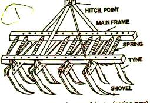 | 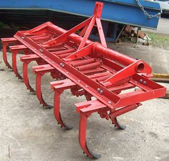 |
| Tractor drawn cultivator- spring loaded tines | Tractor drawn cultivator- spring loaded tines |
CULTIVATOR WITH RIGID TINES
Rigid tines of the cultivators are those tines which do not deflect during the work in the field. The tynes are bolted between angle braces, fastened to the main bars by sturdy clamps and bolts . No springs are available with these cultivators. Spacing of the tines is changed simply by slackening the bolts and sliding the braces to the desired position. Since rigid tines are mounted on the front and rear tool bars, the spacing between the tynes can be easily adjusted without getting the tines choked with stubbles of the previous crop or weed growth. A pair of gauge wheel is used for controlling the depth of operation.
| 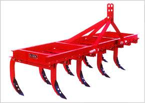 | 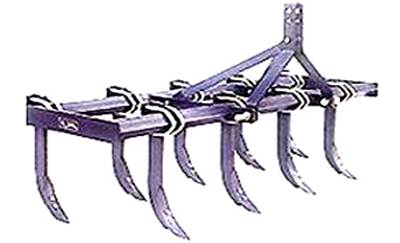 |
| Rigid tyne cultivator | Rigid tyne cultivator |
TYPES OF SHOVELS AND SWEEPS USED IN TINE CULTIVATORS.
Shovel type blades
- Duplex shovel or spear head shovel – for sleeve type tines
- Single point shovel – spring tooth
- Double point or reversible shovel – for spring tooth
Sweeps blades
- Full sweep
- Half sweep right
- Half sweep left
- High speed sweeps
Type of soil, crops and weeds influence the use of a shovel or a sweep. Shovels and sweeps should be operated as shallow as possible to prevent pruning of roots from the plants thereby injuring the crop. Sweeps should be set almost flat. When the point is resting on the floor, or ground., the outer tip of the wing should be elevated only 3-6 mm above the floor. The shovels and sweeps should be set in between the crop rows 5 cm away and at equal distances on each side of the row to avoid any damage to the standing crop.
Setting of blades in a cultivator
When the cultivator has two rows of blades, then the blades are arranged in a staggered way between the two rows
ANIMAL DRAWN CULTIVATOR
a) Sweep
It is an intercultural implement used for removing shallow rooted weeds in between crop rows. It consists of V shaped blades with bevel edged wings called sweeps. The blades are fitted to the tines by means of counter sunk bolts and nuts and the tines are fitted to a frame. By skimming action under the soil at a shallow depth of 2 to 3 cm, the sweep blades cuts the weeds. By the cutting action the blades break the capillary passages in the soil and provide soil mulch for moisture conservation. The coverage is 1.75 to 2.5 ha/day. The salient features of the unit are:
- Suitable for all row crops and soils; provides soil mulch and conserves soil moisture
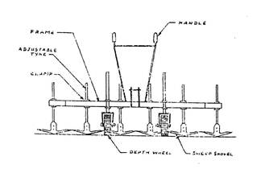
Animal drawn sweep
b) Junior hoe
It is an intercultural equipment used for weeding between the rows of standing crops. It consists of six numbers of curved tines fitted with reversible shovels and attached to a framework with hitching arrangement. The tines are arranged in three rows in staggered way, A handle and beam are fixed to the framework for guiding and attaching the unit to the yoke of the animals. The spacing between the shovels can be adjusted according to the row spacing of the crop. The curved nature of tines gives spring action when struck against stones or roots and releases the tines from the obstacle. The coverage is 1.5 ha per day.
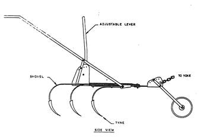
Junior hoe
c) Duck foot cultivator
It is a type rigid cultivator which is used mostly for shallow ploughing, destruction of weeds and retention of moisture. It consists of steel frame and rigid tines to which sweeps are attached. The implement is attached to the tractor with three point hitch system and is controlled by hydraulic system. The sweeps are fabricated from high carbon steel. Number of sweeps can be reduced according to requirement. Usually this cultivator is about 225 cm long; 60 cm wide with 7 sweeps.
ENGINE OPERATED WEEDER
It is used for both intercultural and secondary tillage operations namely stirring the soil, uprooting the weeds, breaking clods, covering seeds etc It consists of a 3-hp engine (petrol start kerosene run), a pair of ground wheels, a cultivator frame with sweep or shovel blades, steering clutch, main clutch, handle , a tail wheel and other control levers. The engine power is transmitted to ground wheels through belt-pulley and sprocket - chain mechanisms. Ground wheels act as traction wheels and pull the cultivator when moving; The tines to be set between rows with sufficient space away from plant stems. To avoid any damage to plants. The tail wheel is provided at the rear of the cultivator frame by raising or lowering of which the operating depth of the blades can be altered. The field capacity is 0.75 – 1.0 ha per day. The salient features of the unit are:
- Useful for weeding in row crops like tapioca, cotton, sugarcane, maize, tomato and pulses whose rows spacing is more than 60 cm
- Can be used for weeding in orchards, coconut and arecanut fields.
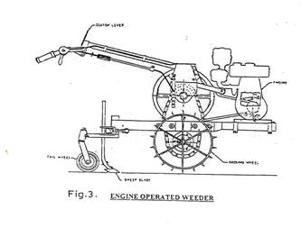
ENGINE OPERATED ROTARY TILLER
It is a walking type tiller used for plains and hilly regions. It is used for both intercultural and secondary tillage operations namely stirring the soil, uprooting the weeds, breaking clods, covering seeds etc It consists of a 3-hp engine (petrol start kerosene run), a rotor with L blades, rotor drive mechanism, handle and other control levers. When engine power is transmitted to rotor, the rotor rotates and till the soil. The rotor rotates in the forward direction and hence there is a forward push facilitating the forward movement of the tiller. The field capacity is 0.75 – 1.0 ha per day. The salient features of the unit are:
- Useful for weeding in row crops like tapioca, cotton, sugarcane, maize, tomato and pulses whose rows spacing is more than 60 cm
- Can be used for weeding in orchards, coconut and arecanut fields.
- Suitable for hilly regions also
- Depth of cut is 8-12 cm
Three Row Weeder (Video) |
| 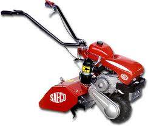 | 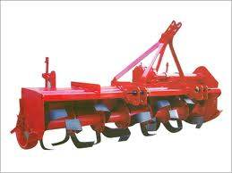 |
| Engine operated rotary tiller | Tractor operated rotary tiller |
Model questions
1. Define inter cultivation in agriculture. Mention some tools and implement used in inter cultivation
2. Explain about blade harrow
3. Explain about junior hoe
4. Explain about engine operated weeder
5. Mention the conditions where in you will use junior hoe
6. Name two implements used for conserving soil moisture in dry lands
7. List the types of weeders
8. Mention a neat sketch and explain the components of cono weeder their
9. Differentiate star and peg type weeders.
10. state the advantages of long handled weeder
A11. Junior hoe is primarily used for
a. breaking clods b. seed bed preparation
c. weeding d. none
A 12. The main advantage of using long handle weeders is
a. Less drudgery to operator b. Less area of coverage
d. Cheaper cost of weeder d. Traditional tool